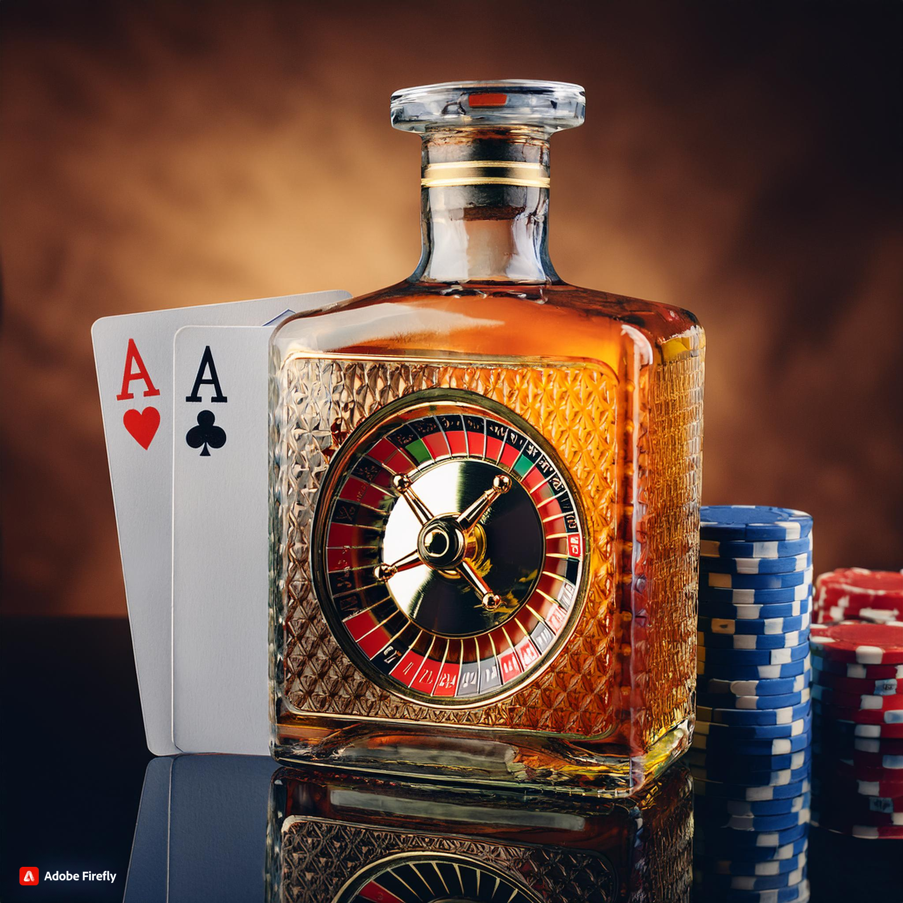
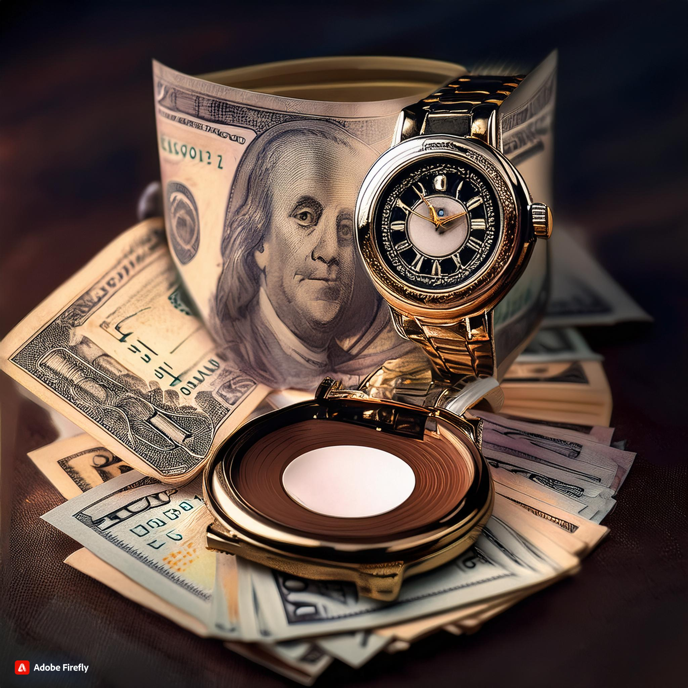
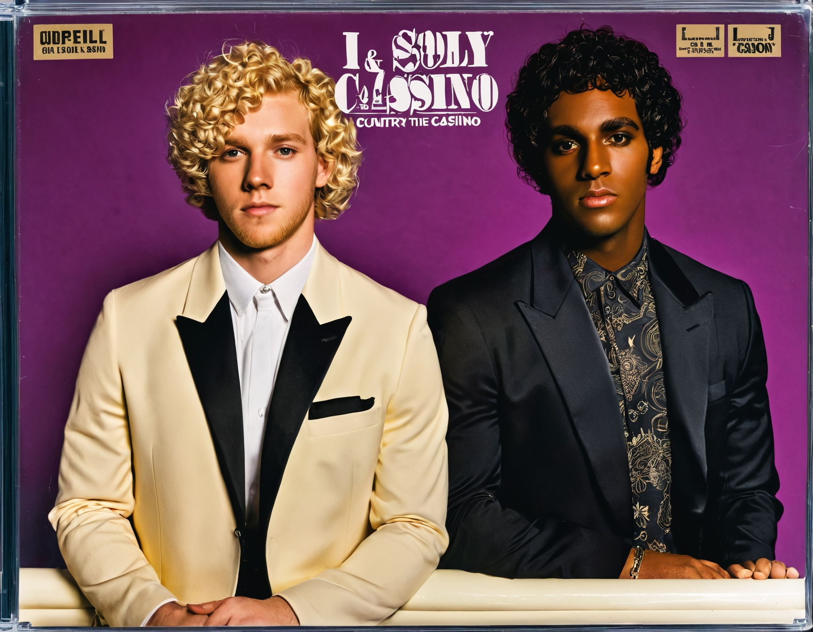

Vendi minha casa pra jogar no cassino
(Primeira estrofe)
Vendi minha casa, peguei o dinheiro
Fui pro cassino, pensando em sorte
Deixei pra trás o meu desespero
Querendo uma vida, mudando o norte
(Refrão)
E lá na mesa, eu apostei tudo
Cada ficha, um pedaço de mim
Na roleta, vi girar meu mundo
E a esperança foi até o fim
(Segunda estrofe)
Mas a sorte, companheira ingrata
Virou as costas, nem me olhou
E a saudade, na mente, retrata
A casa que um dia o amor habitou
(Refrão)
E lá na mesa, eu apostei tudo
Cada ficha, um pedaço de mim
Na roleta, vi girar meu mundo
E a esperança foi até o fim
(Ponte)
Agora sou eu, sem casa, sem nada
Só o baralho e o som do azar
Vendi minha vida nessa jogada
E no cassino, só me resta chorar
(Refrão final)
E lá na mesa, eu apostei tudo
Cada ficha, um pedaço de mim
Na roleta, vi girar meu mundo
E a esperança foi até o fim
(Final)
Vendi minha casa, perdi minha alma
Agora só resta essa dor sem fim
No cassino da vida, a gente se engana
Mas quem joga, sempre perde no fim.

Tigrinho e Álcool
(Primeira estrofe)
Lá na fazenda, o sol se põe lento
E a saudade bate forte no peito
Pego o tigrinho, companheiro atento
E a cachaça vira o meu jeito
(Refrão)
Tigrinho e álcool, minha dupla fiel
No campo, na vida, na beira do céu
Na solidão, eles são meu farol
Tigrinho e álcool, meu destino é só
(Segunda estrofe)
O tigrinho late, como se entendesse
Que o amor foi embora sem olhar pra trás
E o álcool me abraça, só ele parece
Saber o vazio que o coração faz
(Refrão)
Tigrinho e álcool, minha dupla fiel
No campo, na vida, na beira do céu
Na solidão, eles são meu farol
Tigrinho e álcool, meu destino é só
(Ponte)
A noite avança, o copo enche de novo
E o tigrinho se aninha ao meu lado
Entre um gole e um afago, renovo
Essa dor que nunca foi embora de fato
(Refrão final)
Tigrinho e álcool, minha dupla fiel
No campo, na vida, na beira do céu
Na solidão, eles são meu farol
Tigrinho e álcool, meu destino é só
(Final)
Lá na fazenda, o dia amanhece
E o tigrinho me acorda, sempre a me guiar
Mas o álcool ainda aquece
Essa alma perdida, sem saber onde parar.

Horário Pagante
(Primeira estrofe)
O relógio marca meia-noite e pouco
E a ansiedade já toma conta
No cassino online, o jogo é o foco
É no horário pagante que a sorte desponta
(Refrão)
Horário pagante, a emoção me consome
Cada giro é uma chance, cada aposta é um sonho
Na tela brilhante, eu aposto meu nome
E espero o momento em que a vitória vem como um trovão
(Segunda estrofe)
Entre luzes e sons, a roleta gira
E o coração bate fora do compasso
Acreditando que a sorte conspira
Pra mudar meu destino num simples estalo
(Refrão)
Horário pagante, a emoção me consome
Cada giro é uma chance, cada aposta é um sonho
Na tela brilhante, eu aposto meu nome
E espero o momento em que a vitória vem como um trovão
(Ponte)
O silêncio da noite contrasta com a tensão
Olhos fixos, a mão no mouse treme
Mas é no horário pagante que a paixão
Faz o frio da derrota e o calor do prêmio
(Refrão final)
Horário pagante, a emoção me consome
Cada giro é uma chance, cada aposta é um sonho
Na tela brilhante, eu aposto meu nome
E espero o momento em que a vitória vem como um trovão
(Final)
O relógio avança, o saldo oscila
Mas eu continuo, esperando meu instante
No brilho da tela, a esperança cintila
É o poder do jogo, no horário pagante.

757 Não Deixa Sacar
(Primeira estrofe)
No 757 eu sou rei, ganho todo dia
As fichas acumulam, é pura alegria
Mas na hora de sacar, é só agonia
O dinheiro some, só fica a fantasia
(Refrão)
757 não deixa sacar, e eu fico na mão
Apostei tudo, fui na emoção
Mas quando chega a hora de levar pra casa
O cassino some, e a dor me abraça
(Segunda estrofe)
A cada rodada, o saldo só aumenta
O coração dispara, a felicidade alimenta
Mas quando vou tirar, a tela só inventa
O cassino me engana, e a esperança é lenta
(Refrão)
757 não deixa sacar, e eu fico na mão
Apostei tudo, fui na emoção
Mas quando chega a hora de levar pra casa
O cassino some, e a dor me abraça
(Ponte)
Os números piscam, a vitória é minha
Mas o saque é um sonho que nunca caminha
Eu corro atrás, mas é pura ilusão
757 me prende nessa prisão
(Refrão final)
757 não deixa sacar, e eu fico na mão
Apostei tudo, fui na emoção
Mas quando chega a hora de levar pra casa
O cassino some, e a dor me abraça
(Final)
Agora aprendi, o jogo tem seu preço
Ganho, mas não vejo, é um triste tropeço
757 me fez acreditar
Mas no fim das contas, não deixa sacar.